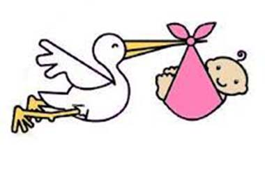
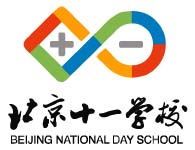
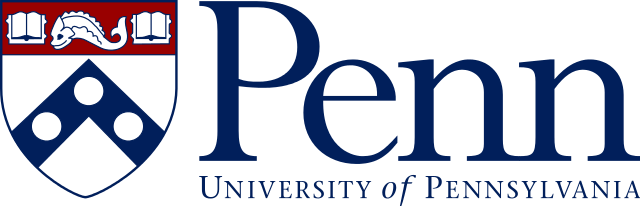

| Index | My Bio | Course Works | Experience and Projects | Publications | Contact Me |
|  | Born: 1998 |
High School: Beijing National Day School |
 |
|  | University of Pennsylvania |
Being a student at the University of Pennsylvania, I am benefited by its emphasis on interdisciplinary study and undergraduate research. I explore vastly in electrical engineering, mechanical design, programming, and learning languages and arts. I extend my potential by not only learning in class, but also applying what I learn in research and solving real world problems.
I currently work in Materials Architecture Lab, developing custom 3D printer extruder for viscous ink. I am responsible for extrusion mechanism design and firmware modifications. I feel that this project is a great combination of computer science, embedded systems and mechanics, enabling me to cooperate with different people and gain a holistic understanding of industrial process for a new product. As an electrical engineer, I am also considerate of different needs and limitations of a complex system. I feel like the bridge between computer scientists and mechanical engineers in my team, combining ideas and simplify each task.
During the semester, I work as Biosphere freshman residential program manager in Kings Court English College House (KCECH). As a community builder for a floor of 40+ freshmen, an event organizer for a house of 350+ residents, and a member of the house management team, I have great communication skills and leadership abilities. Through organizing field trips, volunteering at local parks, and in-house social events, it is my job to create meaningful and fruitful experience for freshmen, and help them adapt to college life.
In the upcoming years as a student and engineer, I hope to work in close-knit teams as a contributor of ideas and as a leader in innovation. I want to make my own contributing to making people's lives better.